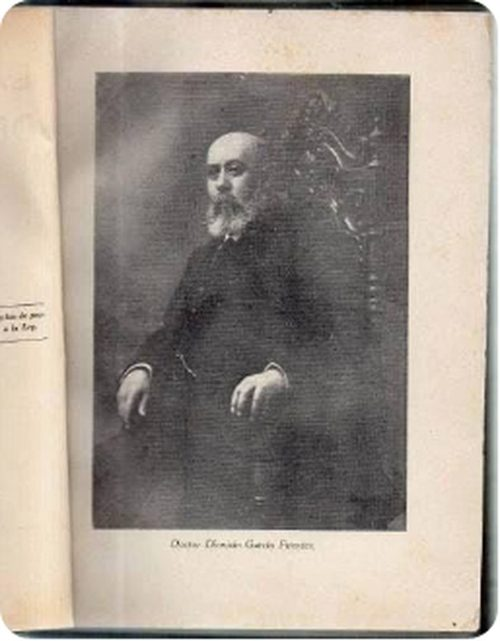

Dr. Dionisio García Fuentes
| Dr. Dionisio García Fuentes | |
|---|---|
 Retrato | |
| Descripción | Médico, educador y filósofo positivista · Saltillo, Coahuila |
| Fechas / lugar | 1855 – 1938 |
| Línea familiar | García Garza |
Dr. Dionisio García Fuentes (1855 – 1938) — Médico cirujano, presidente municipal de Saltillo (1887) y dos veces director del Ateneo Fuente. Conocido en Coahuila como el «Padre del Positivismo»; autor de «La integridad de la conciencia».
Contenido
- 1 Vida y cronología (según las fuentes citadas; sin documento verificado)
- 2 Familia (según el libro; sin documento verificado)
- 3 Parentescos según el libro (sin documento verificado), con las fichas de esta galería y del archivo
- 4 Cargos, oficios y obra
- 5 Lo que dice el libro (sin documento verificado)
- 6 Investigación complementaria
- 7 Contradicciones del libro
- 8 Dato en investigación
- 9 Fuentes
- 10 Ficha anterior de este sitio (conservada)
- 11 Vida
- 12 Obra y cargos
- 13 Legado
- 14 Fuentes
- 15 Referencias
Aviso de método. Esta página reúne lo que dice el libro de Martha Durón Jiménez, Orígenes de una fundación (Archivo Municipal de Saltillo, 1992), y otras fuentes secundarias. Nada de ello se da por establecido: las filiaciones, apellidos y fechas se presentan como «según Durón Jiménez, p. X; sin documento verificado». Sólo se tendrá por probado lo que respalde una imagen de documento (acta, protocolo, registro) leída y transcrita; cuando se incorpore, se indicará aquí.
Según Durón Jiménez, Orígenes de una fundación (1992); sin documento verificado: Médico cirujano saltillense, alumno del recién fundado Ateneo Fuente y titulado en la Escuela de Medicina de México en 1877. Regresó a Saltillo y colaboró con su tío Antonio García Carrillo en la reforma del Plan de Estudios del Ateneo; fue su director en dos ocasiones (1893-1895 y 1909-1913 según Dávila). Bajo su dirección se inauguró la biblioteca del Ateneo (16-sep-1894). El Paraninfo del Ateneo lleva su nombre desde 1942. Falleció en Saltillo el 7 de febrero de 1938.
Biografía elaborada a partir del libro de Martha Durón Jiménez, Orígenes de una fundación. Genealogía de don José García Rodríguez, 1530-1992 (Archivo Municipal de Saltillo, 1992), cuyo texto se cita en extracto con su página, y de investigación complementaria con fuentes citadas. Lo que no tiene fuente se marca «dato en investigación»; las contradicciones se señalan sin corregirlas.
- Años (según el libro y fuentes citadas; sin documento verificado): 9-nov-1854 – 7-feb-1938 (libro); la versión anterior de esta ficha dice 1855-1938
- En el libro: p. 26 (texto); árbol p. 27
Vida y cronología (según las fuentes citadas; sin documento verificado)[editar]
- 9-nov-1854 Nace en Saltillo, hijo de Dionisio García Carrillo y María Luisa Fuentes. (libro p. 26; árbol p. 27 (lectura visual del libro). Versión anterior de esta ficha: 1855.)
- 1867 Es de los alumnos fundadores del Ateneo Fuente (según Dávila). (Dávila, Ateneo Fuente, 2021, p. 36 («uno de los alumnos fundadores»).)
- 1877 Termina medicina en México: tesis Consideraciones fisiológicas sobre el sonambulismo (Imp. de Jens y Zapiain, 20 p.). (libro p. 26 («terminándolos en 1877»); registro ADABI.)
- 1880s Se une a su tío Antonio García Carrillo para el cambio del Plan de Estudios del Ateneo (segunda Ley de Instrucción Pública). (libro p. 26; Durón, Rev. Coah. Hist. 116, p. 47.)
- 1893-1895 Primer periodo como director del Ateneo Fuente. (Dávila, p. 36; el libro (p. 35) lo menciona como director en 1893.)
- 16-sep-1894 Se inaugura la biblioteca del Ateneo, construida y dotada siendo él director; donó su sueldo para comprar libros. (Dávila, pp. 41-42; Alma rústica, presentación de M. A. Contreras Becerra, p. 5 (ver investigación).)
- 1909-1913 Segundo periodo como director del Ateneo. (Dávila, p. 36.)
- 7-feb-1938 Fallece en Saltillo. (libro p. 26; Dávila p. 36 («Fallecido en 1938»).)
- 30-oct-1942 Durante el LXXV aniversario del Ateneo se dedica el Paraninfo a su memoria; preside don José García Rodríguez como director. (Dávila, pp. 36-37.)
Familia (según el libro; sin documento verificado)[editar]
Padres: Dionisio García Carrillo y María Luisa Fuentes. Hermano: Dr. Jesús García Fuentes. Primo hermano: José García Rodríguez (hijo del tío Antonio García Carrillo; libro p. 33 y Rev. 116, p. 57).
Esposa: el texto (p. 26) dice «Josefa Zertuche»; el árbol (p. 27), «Josefina Zertuche». Descendencia: no la da el libro. Dávila (p. 37) registra en 1942 como descendientes de don Dionisio a «doña María García de Villarreal, don Roberto García y don Ricardo Villarreal García» (la primera podría ser su hermana María García Fuentes, ↔ Alfredo Villarreal Villarreal, pero la identificación es una hipótesis mía: dato en investigación).
Parentescos según el libro (sin documento verificado), con las fichas de esta galería y del archivo[editar]
- Padre: Dionisio García Carrillo
- Hermano: Dr. Jesús García Fuentes
- Primo hermano: Don José García Rodríguez
- Tío: Lic. Antonio García Carrillo
Cargos, oficios y obra[editar]
Médico cirujano (Escuela Nacional de Medicina, 1877); catedrático y dos veces director del Ateneo Fuente; promotor del Museo de Historia Natural y de la Biblioteca del Ateneo (Dávila, p. 36); junto con Antonio García Carrillo y José María Múzquiz, uno de «los artífices» de la segunda Ley de Instrucción Pública (Durón, Rev. 116, p. 47). El libro añade «Decano de la Facultad Médica Mexicana» (p. 26), título que no encontré documentado en las fuentes abiertas (dato en investigación).
Lo que dice el libro (sin documento verificado)[editar]
Extracto fiel de Durón Jiménez, Orígenes de una fundación, 1992, p. 26 (texto); árbol p. 27. Se conserva la ortografía original; [sic] señala un error del original y [n] una llamada de nota.
DIONISIO GARCÍA FUENTES:
Nació el 9 de noviembre en Saltillo, realiza sus primeros estudios aquí, posiblemente en el Colegio Josefino y después pasa al recién fundado Ateneo Fuente. Posteriormente se va a México a continuar sus estudios de Medicina, terminándolos en 1877. Llega a ser Decano de la Facultad Médica Mexicana; al regresar a Saltillo, se une a su tío, el Lic. Antonio García Carrillo, para realizar el cambio del Plan de Estudios del Ateneo Fuente. El doctor García Fuentes llega a ocupar en dos ocasiones, la dirección del Ateneo.
El doctor García Fuentes contrae matrimonio con Josefa Zertuche y fallece el 7 de febrero de 1938, aquí en Saltillo.
Investigación complementaria[editar]
- Tesis profesional. Registro ADABI: Consideraciones fisiológicas sobre el sonambulismo, 1877, 20 p. (https://www.adabi.org.mx/vufind/Record/1117728).
- Ateneo Fuente y reforma de estudios. Martha Durón (Rev. 116, p. 47) lo cita como uno de los tres artífices de la nueva ley: «el tercero se había reincorporado recientemente al estado, después de obtener el título de médico cirujano en 1877 en la prestigiada Escuela Nacional de Medicina» (cita a Candelaria Valdés Silva, El pasado de una esperanza, los orígenes del Ateneo Fuente, UAdeC–Ayuntamiento de Saltillo, 2005, p. 91).
- Director del Ateneo. Dávila Sota (p. 36): «alumno fundador, también director de la institución en dos ocasiones, de 1893 a 1895 y de 1909 a 1913, y ferviente promotor del Museo de Historia Natural y de la Biblioteca». El 30-oct-1942 el Paraninfo se dedicó a su memoria con asistencia del secretario de Educación Rodulfo Brito Foucher y del gobernador Benecio López Padilla.
- La biblioteca. Dávila (pp. 41-42): en septiembre de 1894, siendo director, se inauguró «un nuevo salón… construido especialmente para una bien abastecida biblioteca», con una velada el 16-sep-1894 en la que José García Rodríguez declamó un poema. El director del Ateneo (2019) escribe en la presentación de Alma rústica (p. 5) que el Dr. García Fuentes «siendo director de nuestro Ateneo donaba íntegramente su sueldo para la compra de los libros para sus alumnos», y que la biblioteca ya tenía 653 títulos ordenados por Joaquín Castilla.
- Obra escrita. Un resumen de búsqueda del 28-oct-2026 atribuye a don Dionisio La integridad de la conciencia (1937); no se abrió la fuente (dato en investigación; el título circula también como «integración»).
Contradicciones del libro[editar]
Se registran sin corregir.
- Año de nacimiento. Libro: 9-nov-1854 (árbol p. 27, visto en la imagen del libro: «n 9/nov/1854-7/feb/1938»). La versión anterior de esta ficha y otros sitios: 1855. No hay acta consultada.
- Nombre de la esposa. Texto p. 26: «Josefa Zertuche»; árbol p. 27: «Josefina Zertuche».
- Director del Ateneo. El libro (p. 35) lo da como director en 1893 y p. 26 dice «en dos ocasiones» sin años; Dávila precisa 1893-1895 y 1909-1913. No hay contradicción, sólo precisión.
- Título «Decano de la Facultad Médica Mexicana». No confirmado en otras fuentes (dato en investigación).
Dato en investigación[editar]
- Acta de nacimiento/bautismo (¿1854 o 1855?) y acta de defunción 7-feb-1938: dato en investigación.
- Resumen de búsqueda sugiere cargos como presidente municipal de Saltillo (1887), catedrático en la Escuela Nacional Preparatoria y estancias en Puebla y la Ciudad de México: no verificado; no usar sin fuente.
- Matrimonio con Josefa/Josefina Zertuche (fecha y lugar) y descendencia: dato en investigación.
Fuentes[editar]
- Martha Durón Jiménez, Orígenes de una fundación. Genealogía de don José García Rodríguez 1530-1992, Archivo Municipal de Saltillo, 1.ª ed., diciembre de 1992, 146 pp..
- Esperanza Dávila Sota, Ateneo Fuente. La expresión de un edificio, Instituto Municipal de Cultura de Saltillo, 2021 (col. Edificios emblemáticos de Saltillo), pp. 36-37 (Paraninfo «Dr. Dionisio García Fuentes») y 41-42 (Biblioteca «José García Rodríguez»). PDF: https://web.seducoahuila.gob.mx/colegiocoahuilense/assets/img/publicaciones/publicacionescontenido/Ateneo%20Fuente-Esperanza%20Davila.pdf.
- Martha Durón Jiménez, «Ateneo Fuente: un proyecto de familia 1867-1948», Revista Coahuilense de Historia n.º 116, pp. 37-58 (mismo PDF que la anterior).
- José García Rodríguez, Alma rústica, 2.ª ed., Consejo Editorial del Gobierno del Estado de Coahuila, 2019 (1.ª ed. Editorial Stylo, 1950), con presentación de Marco Antonio Contreras Becerra y «Semblanza de don José García Rodríguez» de Jaime García S. Narro (septiembre de 2019), pp. 4-12 del PDF. https://coahuilacultura.gob.mx/wp-content/uploads/2020/03/Alma-r%C3%BAstica-PDF.pdf.
- Dionisio García Fuentes, Consideraciones fisiológicas sobre el sonambulismo (tesis para el examen profesional de medicina y cirugía), México, Imp. de Jens y Zapiain, 1877, 20 p. Registro ADABI (ejemplar de la Biblioteca Francisco de Burgoa, UABJO): https://www.adabi.org.mx/vufind/Record/1117728
Ficha anterior de este sitio (conservada)[editar]
Texto que esta página tenía antes de incorporar el libro de Durón Jiménez; se conserva íntegro, con sus fuentes. Como el resto de la página, sus datos no se dan por establecidos sin documento verificado.
Ver la ficha anterior
Dionisio García Fuentes nació en Saltillo, Coahuila, el 9 de noviembre de 1855* y murió en la misma ciudad el 7 de febrero de 1938. Médico de formación y maestro por vocación, fue una de las inteligencias más influyentes de la vida educativa coahuilense entre los siglos XIX y XX.
Vida[editar]
Se tituló de médico cirujano en la Ciudad de México en mayo de 1877. De regreso en su ciudad natal combinó el ejercicio de la medicina con la cátedra y el servicio público: en 1887 fue presidente municipal de Saltillo. En 1905 aspiró a la gubernatura de Coahuila con el respaldo de los clubes democráticos «Benito Juárez», promovidos por Francisco I. Madero.
Obra y cargos[editar]
- 1877 Médico cirujano titulado en la Ciudad de México.
- 1887 Presidente municipal de Saltillo.
- 1893–1895 Director del Ateneo Fuente; bajo su dirección se inauguró la biblioteca del plantel el 16 de septiembre de 1894, hoy biblioteca «José García Rodríguez».
- 1909–1913 Director del Ateneo Fuente por segunda ocasión; participó en la reforma de su plan de estudios.
- Puebla Director de la Escuela Normal y presidente del Consejo de Salubridad del estado.
- 1918–1920 Vocal del Consejo Superior de Salubridad y vicepresidente del Departamento de Higiene Escolar del Distrito Federal.
- 1921–1923 Catedrático de Biología en la Escuela Nacional Preparatoria; decano de la Facultad de Medicina.
Legado[editar]
Difusor en Coahuila de la filosofía positivista de Comte y Gabino Barreda, es recordado como el «Padre del Positivismo» en el estado. Su ensayo La integridad de la conciencia sintetiza ese pensamiento. Descansa en el Panteón de Santiago de Saltillo, donde su tumba ostenta un busto de mármol con una sola palabra por epitafio: «Positivismo». Una escuela primaria de Saltillo lleva su nombre.
* Algunas fuentes educativas de Coahuila registran el nacimiento en 1854. Retrato de época con leyenda impresa «Doctor Dionisio García Fuentes» (fuente secundaria de aniversario de muerte, 1938). Se agrupa en la familia García Garza por su apellido García; su filiación directa con Lorenzo García y Juana de la Garza está en investigación.
Fuentes[editar]
Referencias[editar]
- «Dr. Dionisio García Fuentes», Genealogía Sefardí — investigación Sefarad-MX, genealogiasefardi.site/biografias/dionisio-garcia-fuentes.